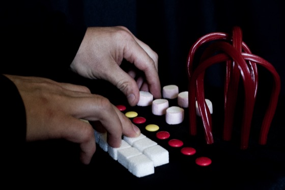

Alex Tkalenko
Ongoing Projects
No Title - Digital instrument design
So We Walk Alone #music #postpunk #oldwave
Past Projects
Sound FileConversations #experimental #electronicmusic
Sonology Ensamble #music experimental
Elements EP - (atk90x) #music
Contact #soundart #piece - In Sonora Festival
Pages & Cages - #videoart - Lamosa Festival
MiniShoog - #photography
Commuting Dreams - #soundart #music
Collaborations / Features
Telaraña Electromagnética (I'm Sitting in a Room - Various Artists) #experimental piece
Granular performance for Flusing Toilets
Moon (Sonic Practices Vol.2 - Various Artists) #ambient #experimental soundart
